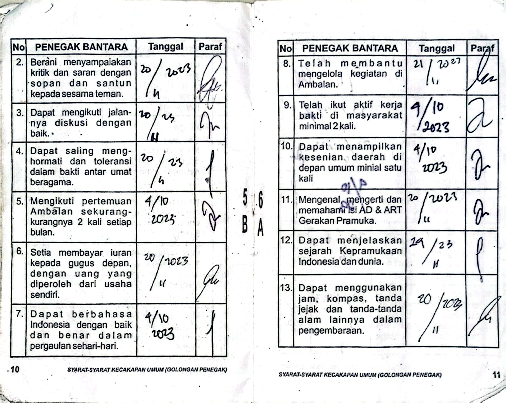
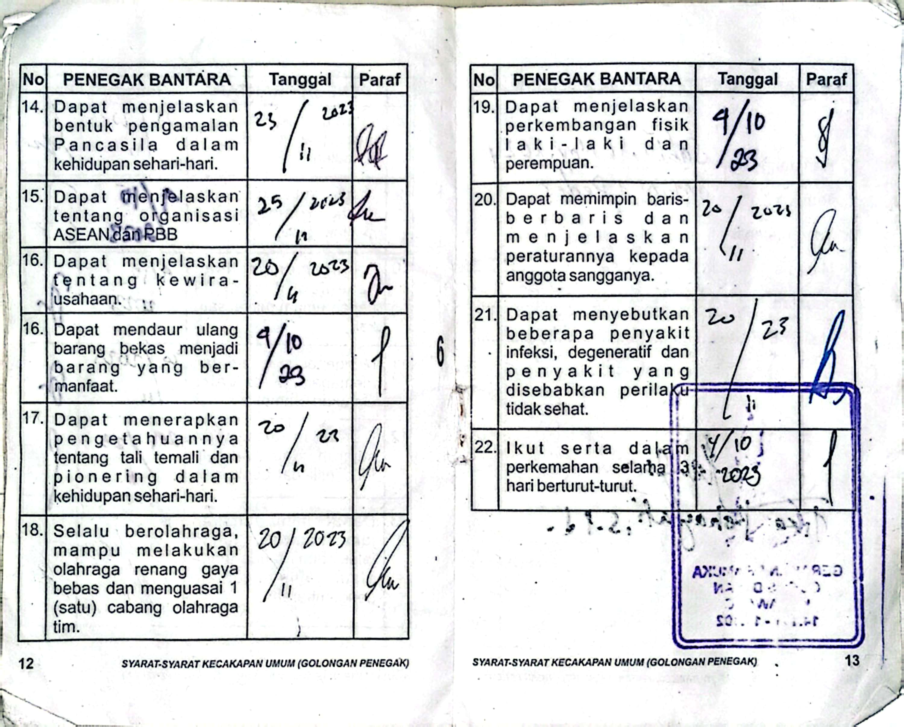
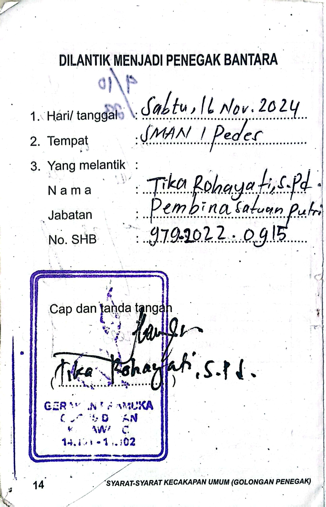
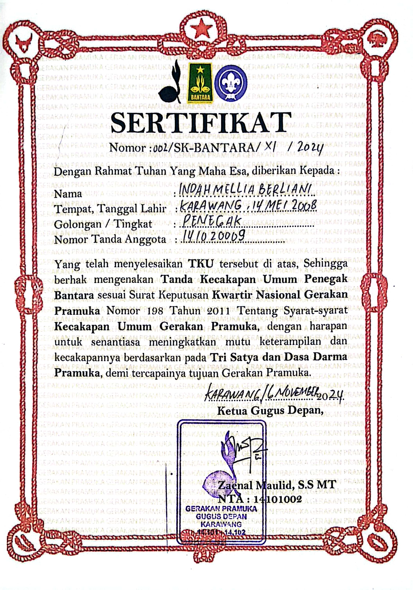
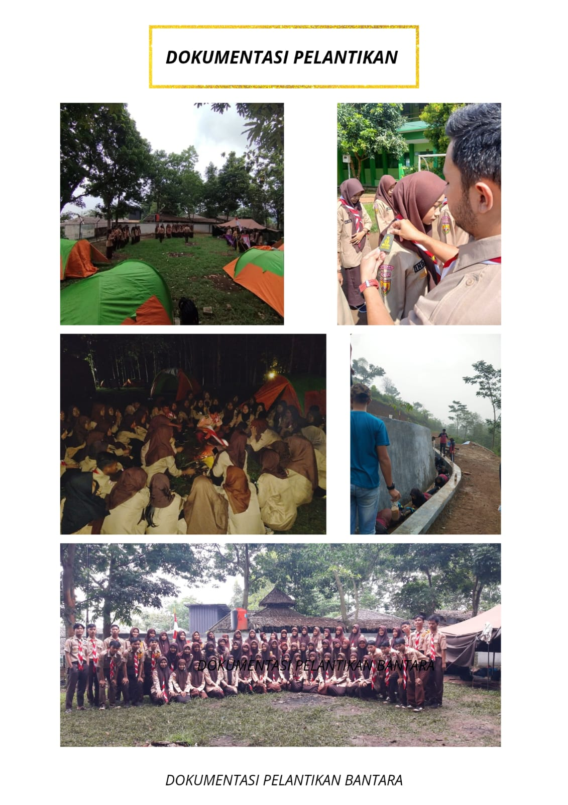
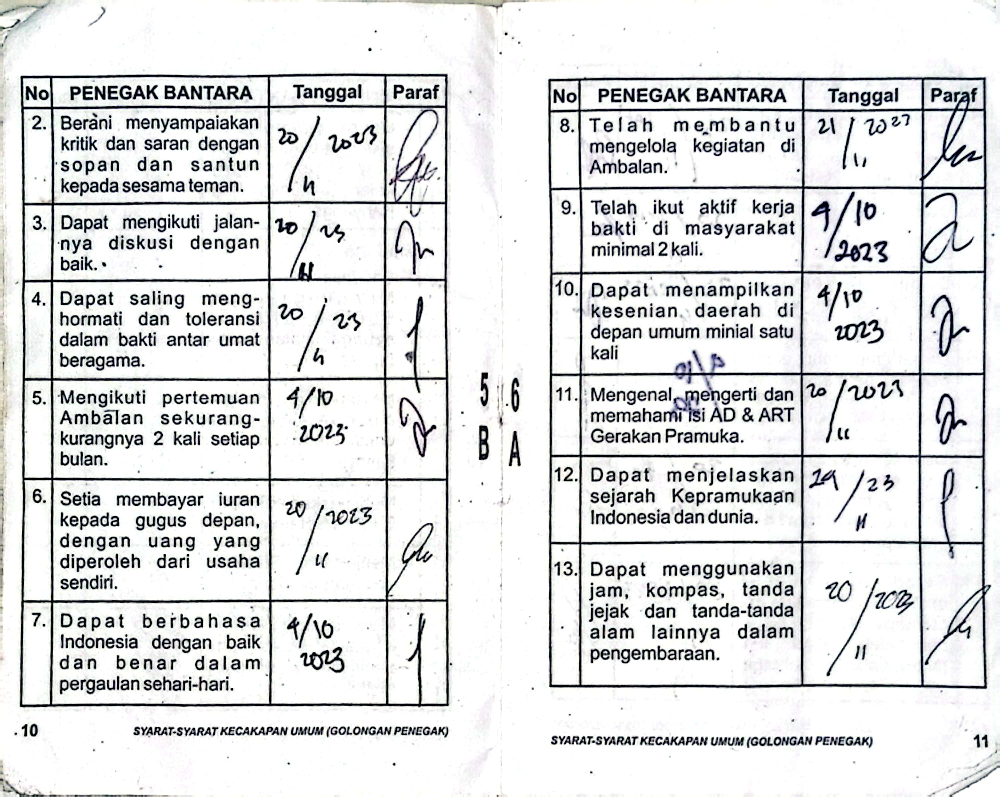
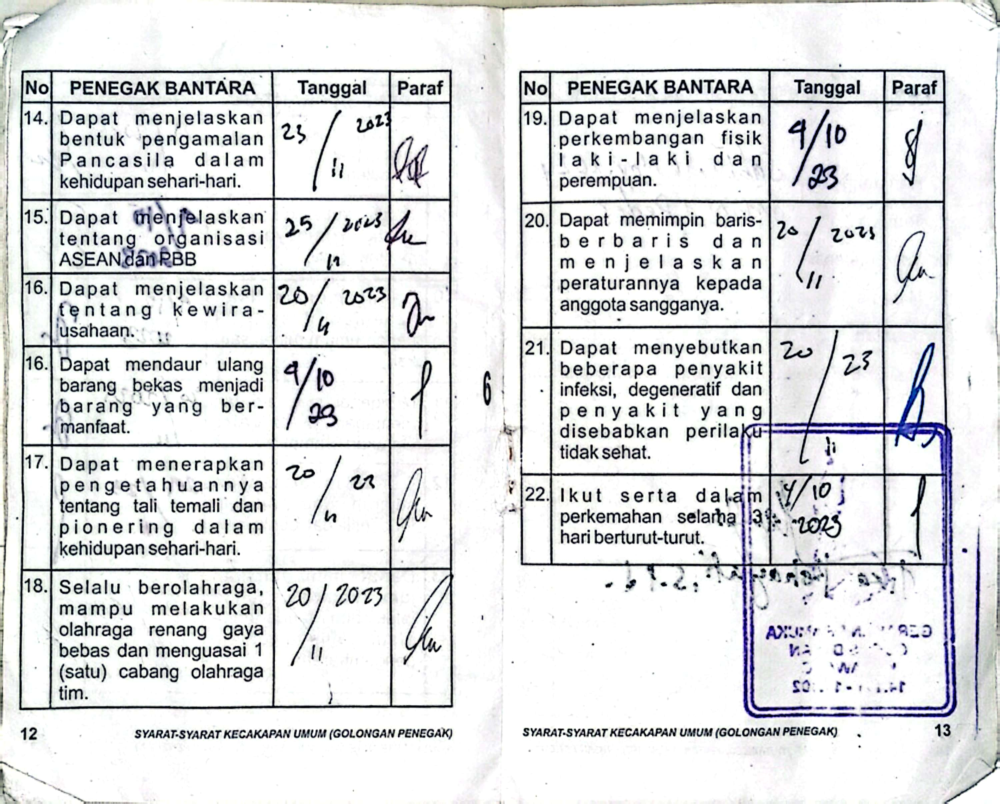
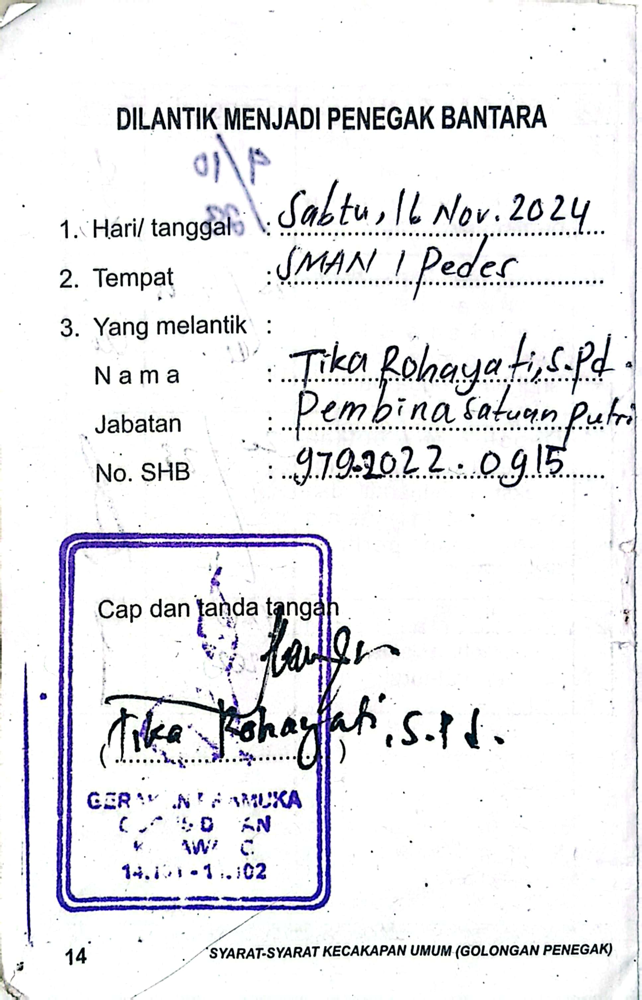
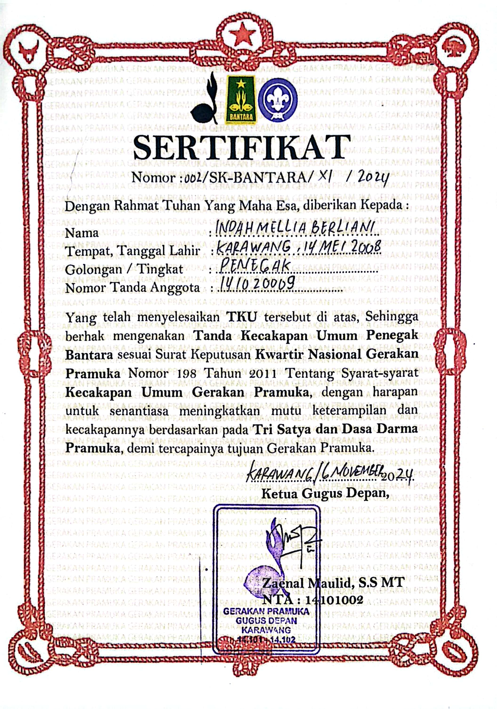
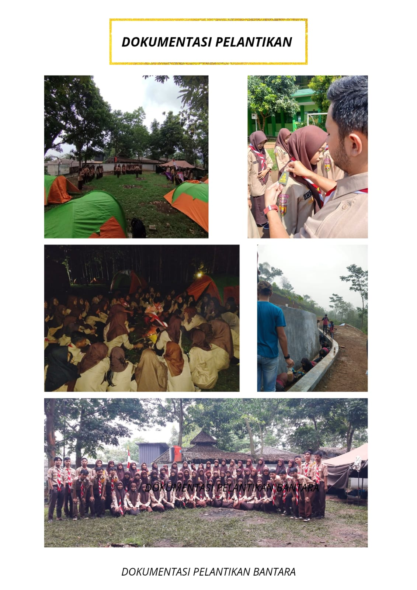

hai perkenalkan Saya
Indah Mellia Berliani
siswi SMAN 1 Pedes. Saya lahir di Karawang pada 14 mei 2008. Saat ini saya menjabat sebagai Ketua Dewan Ambalan Putri di gugus depan SMAN 1 Pedes.
Pengalaman & Pendidikan
Pengalaman Organisasi
Wakil Pratama
Pangkalan SMPN 1 Pedes (Kelas VIII)
Membantu Pratama dalam memimpin kegiatan
Bertanggung jawab atas divisi tertentu
Anggota
Pangkalan SMAN 1 Pedes (Kelas X)
Aktif mengikuti kegiatan kepramukaan
Mengembangkan keterampilan dasar pramuka
Ketua Dewan Ambalan Putri
Gugus Depan SMAN 1 Pedes
Memimpin dan mengkoordinasi kegiatan kepramukaan
Membina anggota dalam pengembangan karakter
Menyusun program kerja tahunan
Mengembangkan jiwa kepemimpinan anggota
Pendidikan
SDN Sungaibuntu 1
Pendidikan Dasar
SMPN 1 Pedes
Pendidikan Menengah Pertama
SMAN 1 Pedes
Pendidikan Menengah Atas (Sedang Berlangsung)
Jurusan: [Isi jurusan jika ada]
Organisasi: Pramuka (Ketua Dewan Ambalan Putri)
Pencapaian SKU/TKU

Pencapaian Penegak Bantara
Mendalami nilai dan keterampilan Pramuka tingkat Penegak Bantara, termasuk teknik kepramukaan dan kepemimpinan dasar.
 









Pencapaian Penegak Laksana
Mendalami nilai dan keterampilan Pramuka tingkat Penegak Laksana, meliputi pengembangan kepemimpinan lanjutan, kemampuan teknis kepramukaan, serta pelaksanaan kegiatan pengabdian dan proyek satuan karya.
Pencapaian TKK
SHOLAT
Untuk mencapai TKK Sholat, saya memahami syarat, rukun dan yang membatalkan solat
PELUKIS
Untuk mencapai TKK Melukis, saya membuat beberapa karya dengan teknik berbeda:
Juru Renang
Telah menyelesaikan pelatihan dan ujian TKK Juru Renang dengan baik, termasuk teknik dasar renang gaya dada dan gaya bebas. Mampu berenang sejauh minimal 25 meter tanpa bantuan alat dan memahami prinsip keselamatan di air. Meningkatkan kebugaran, ketangkasan tubuh, serta kesiapsiagaan dalam kondisi darurat perairan.
PENGASUH KELINCI
Untuk mencapai TKK ini, saya telah mempelajari:
- Jenis pakan kelinci yang bernutrisi
- Jadwal pemberian makan yang ideal
- Cara menyiapkan pakan alami
- Teknik pengamatan kesehatan kelinci
PENGASUH KAMBING
Pencapaian dalam merawat kambing meliputi:
- Memahami kebutuhan gizi kambing
- Teknik pemberian pakan yang benar
- Pembuatan pakan fermentasi
- Pengenalan tanaman pakan ternak